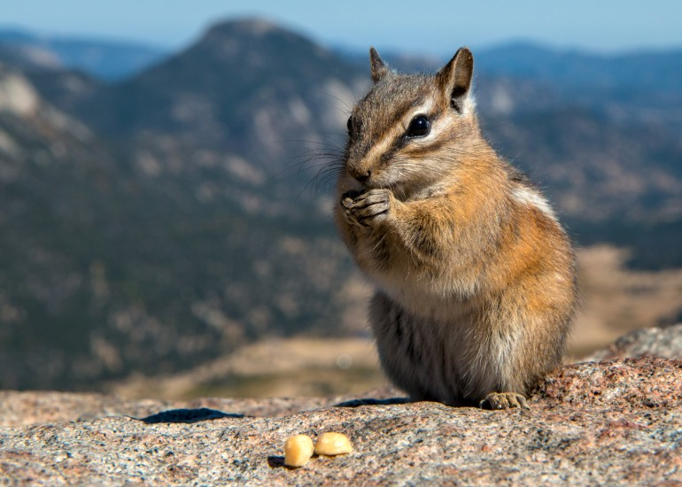

We cannot continue to ignore the impact of climate change in high mountain areas. Despite what critics might say,
the evidence is there: rising temperatures, melting glaciers, changing and unpredictable weather patterns are
significantly disrupting ecological, social, and economic systems. This is evident in countless studies and
research conducted by professionals. But this is not just about science, research, and data. These disruptions
are felt by local communities but more importantly, by those across the globe who depend on the vital, natural
resources these high-altitude ecosystems provide.This is about the human and animal stories behind climate change
in mountains. It is about the pikas, marmots, moose, chipmunks and birds who are dying out and becoming a faint
memory of something that was. It is about the indigenous peoples who have lived in these regions for centuries
and who have developed a deep understanding of the natural systems that sustain them. It is about the mountain
guides, the farmers, the herders, and the people who build their lives off of these fragile ecosystems. It is
about Rana and his grandson, their destroyed village, and the two hundred villagers, and friends they lost. It
is about the present and future victims of climate change who are inheriting the consequences of our actions and
the actions of greedy corporations.
Vulnerability
Mountain regions are especially vulnerable to climate change due to their unique ecosystems,
each with unique factors that species depend on and their lack of resilience to overuse by humans and animals.
Within mountain ranges, animals generally are not able to go down and up to a different mountain when their
specific habitat or ecosystem is disturbed by global warming or extreme weather events. This is because of a
variety of reasons, including their habitat specification, which limits species to one or two different climates,
some type of competition or predator on the other mountain, or even simply because they are unable to travel
through a valley. Because of this, these animals are forced into higher elevations where they become isolated
from other species or other groups of their own species and, in turn, lose much of their genetic diversity (Billman).

One example of this is the Tamias Alpinus (T. Alpinus), a species of mountain chipmunk native to the Sierra Nevada
mountain range in California. The T. Alpinus are more ecologically specific to alpine ecosystems when compared to
other species of the same genus like the Tamias Speciosus. Therefore, as climate change has touched their habitats
and temperatures have increased over the past one hundred years, the T. Alpinus has been forced to retract upslope,
isolating the species, and causing the loss of most of its genetic diversity. This has happened to such a degree
that chipmunks of this species from different mountains can not mate with each other because they have genetically
changed to be so vastly different. Furthermore, their isolation on different mountain tops has created a lack of
genetic diversity among each group of chipmunk which has caused, along with decreasing populations, an inability
for the T. Alpinus to evolve (Billman). Essentially, the T. Alpinus, like many other animals such as bighorn sheep,
marmots, mountain pikas, and even humans are under threat of population decrease or extinction because of the damage
their ecosystems experience from climate change.
Apart from food and crops vulnerable to damage, humans, as well as animals, are very dependent on water sources
provided by mountain areas. Moreover, it is not just the mountain residents who live in these areas that are
dependent upon this water. According to a study done in 2020 on nature sustainability, around 1.5 billion people
(approximately 24% of the world’s lowland population) are projected to critically depend on the runoff these
mountains provide by the mid 21st century. A drastic increase from the 0.2 billion (7%) in the 1960s (Viviroli et al).
People who do not live in these already fragile mountain systems depend on their resources which are under threat by climate change.
In fact, global warming has already touched mountains in the US. Take the Rocky Mountains for example, where global warming has caused
a smaller share of winter precipitation to be snow on mountains, which results in a reduced spring snowpack, earlier snowmelt, and
in turn, earlier peak streamflows and drier summers. Studies have shown that peak streamflows have occurred 30 days earlier on average
from 2001-2010 than from 1950-2000 (Funk et al 1-2). People and animals living in western and midwestern states have suffered
from more extreme drought during the summers over the past couple of years as the Rockies have had earlier dry peaks and hotter
temperatures. Global warming is already affecting these water sources that much of the world is dependent on and the livability of
these areas is becoming worse and worse.
Although, despite potentially worsening living conditions, more and more people are moving to
living in high mountain areas which creates even more problems. Mountain systems become more and more vulnerable to overuse as
population growth increases. One study using one of the population datasets (GHS-POP) revealed that in ∼35% of mountain regions,
population increased at least twofold over the 40-year period between 1975–2015 (Thornton et al). Another source shows that
populations in most mountain areas in the Hindu Kush-Himalayas will have doubled by 2030 if current growth trends in these
regions continue (Kasperson et al 329). This increase in population growth causes a resource-use intensity beyond the capacity
these mountain systems produce said resources. For instance, in the Hindu Kush-Himalayan region, the population growth has
brought an increase in livestock population which has created problems with overgrazing and deforestation. Furthermore, these
regions have seen an increased focus on cash crops with the population growth, which has pushed staple food crops to more marginalized,
fragile mountain slopes that are susceptible to landslides and flash floods (Kasperson et al 330-331). As the population in mountain
areas grows, they create a strain on the ecosystem as they consume more resources and damage existing food and water sources. This
problem is only accentuated by climate change as temperatures increase, water availability worsens, and habitats are damaged,
further lowering the resource capacity that is already under pressure. These mountain regions are home to ten percent of the world
population and exhibit the highest levels of biodiversity with 86% of mammals, amphibians, and birds living in these regions (Billman).
That means 10 percent of the world population and an overwhelming amount of the animal population are already being affected by climate
change as it infiltrates these fragile ecosystems.